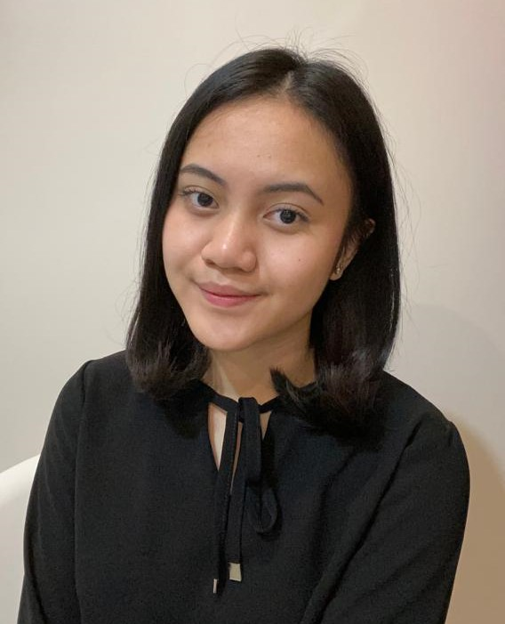

Home
Profile
Education
Experience
Contact
Kezia Angelique Sidabutar

"be honest, be open, and be less critical of yourself"
- Tiffany Moule
About Me
Hello! I'm Kezia Angelique Sidabutar.
But you can also call me Kezia for short.
I'm a second-year undergraduate Information System student at Sepuluh Nopember Institute of Technology (ITS).
Business and technology are the most things I'm interested in.
I dreamed to work at or create a startup company for the betterment of Indonesia as well as the rest of the world.
Here's my profile so you can get to know me better:
| Full Name |
: Kezia Angelique Sidabutar |
| Nickname |
: Kezia |
| Student ID |
: 5026201052 |
| Date of Birth |
: Jakarta, November 16th 2002 |
| Gender |
: Female/Male |
back to home
Educational Backgrounds
- Sepuluh Nopember Institute of Technology (ITS)
- Undergraduate Student, Information Systems (2020-present)
- 77 National Senior High School
- Mathematics and Natural Science (2017-2020)
- Tarakanita 4 Junior High School
- (2014-2017)
- Tarakanita 5 Elementary School
- (2008-2014)
back to home
Organizational & Volunteer Experience
-
External Staff at Ikatan Mahasiswa Jakarta ITS (IMAJAS)
March 2020-present
-
Public Relations Staff at ISE! 2021
May 2021-present
-
Staff of IMAJAS at Ini Lho ITS! 2021
February 2021-March 2021
-
Fundraising Staff at Compassion: A Virtual Concert Performed by New Member of PSM ITS
November 2020-July 2021
back to home
Contact Me
click to connect!
back to home